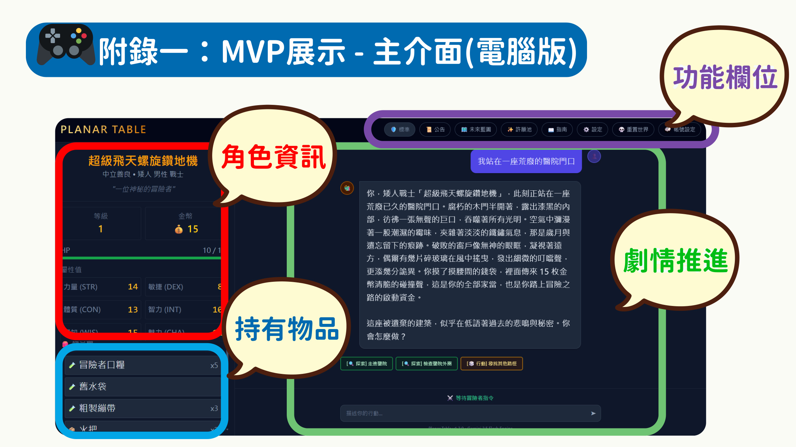
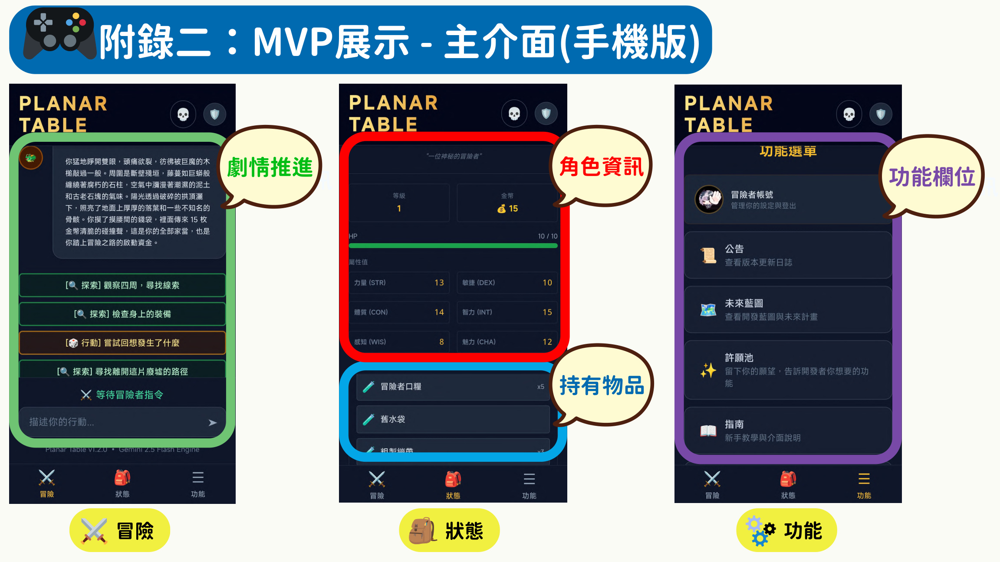
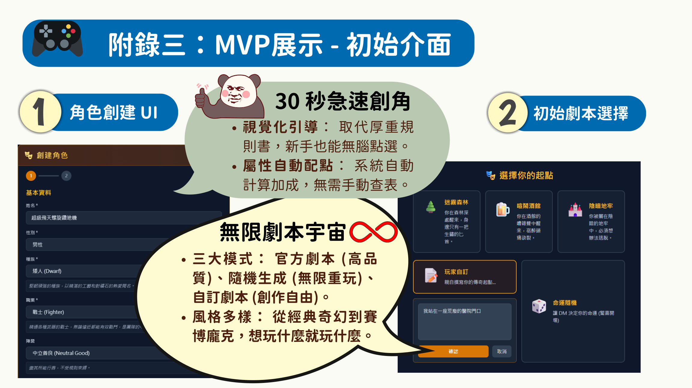

敘事層 · Narrative Layer
由 Gemini / Grok 等模型生成場景描述、NPC 對話與劇情氛圍，讓玩家感受到像被帶團一樣的沉浸式敘事。
- 環境描述與故事分支
- 角色互動與氛圍營造
- 支援高自由度文字輸入
這是官網最值得被看見的技術護城河：右腦負責敘事沉浸，左腦負責理性運算，避免 AI 在血量、檢定與判定邏輯上失真。
由 Gemini / Grok 等模型生成場景描述、NPC 對話與劇情氛圍，讓玩家感受到像被帶團一樣的沉浸式敘事。
以 TypeScript 後端、資料庫與工具流程來處理骰子檢定、HP 扣減、裝備資料與結果落盤，讓 AI 僅負責解釋，不負責竄改結果。



目前這版先以靜態網站完成品牌與資訊層，方便之後再往產品型網站延伸。